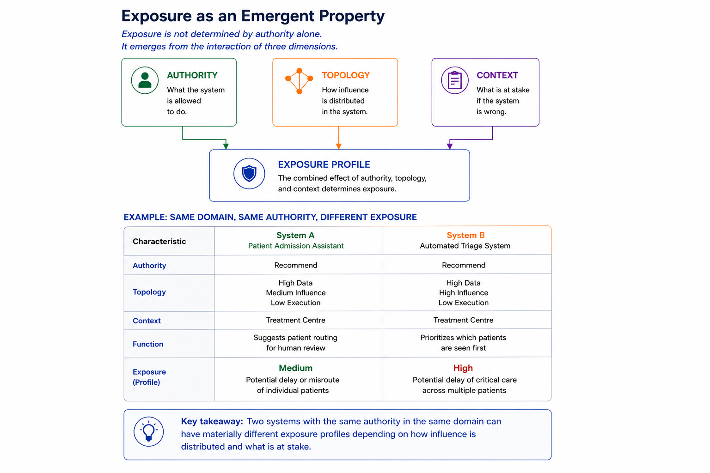

3. EXPOSURE, VISIBILITY, AND DECISION SURFACES
The shift from Assist to Act has different governance implications. To understand this, we must look at the changes that happen at each transition, focusing not on capabilities but on what the organisation is risking.
Exposure as a System Property
In many governance discussions, exposure is seen as a consequence of failure — assessed through incidents, harms, or regulatory breaches after they occur. SCOPE views exposure differently. It sees exposure as a feature of a system's design that can be evaluated before deployment, not just inferred after an incident.
SCOPE defines exposure as the extent to which organisational outcomes rely on system behavior.
As shown in Figure 2, exposure arises from the interaction of Authority, Topology, and Context. We can examine exposure before these dependencies become established.

Figure 2: Exposure as an Emergent PropertyThis reframe is important for practical reasons. If exposure is a property, rather than a result, it can be designed, defined, and managed. We can no longer assess authority only based on what a system can do. We also need to consider how organisational outcomes rely on system behavior.
The table in Figure 2 reveals another important point: two systems with the same authority levels in the same operational area can have very different exposure profiles. This difference depends on how influence is shared and the context of the system.
For example, a recommendation system for patient admission sequencing (System A) operates with low exposure. In contrast, an automated triage system that decides who receives urgent care (System B) operates with high exposure, even though they have the same underlying authority.
Visibility and Decision Surfaces
Exposure grows as organisations become more dependent on how systems behave.
One main way this dependency increases is through visibility into the decision surface. The decision surface includes the information, cases, options, or workflow states that a human decision-maker can access at a specific moment.
In straightforward workflows, human operators can see the relevant information and make decisions with a complete understanding of the operational environment. As systems become more integrated into workflows, they start to customize the decision surface that remains visible. At the Assist stage, visibility does not change much. The system may summarize, classify, or organize information, but humans still see the entire operational picture.
At the Recommend stage, the system begins to influence how information gets evaluated. Recommendations might shape judgment, but they do not change the fundamental decision surface. Human operators still see all relevant cases and options.
At the Constrain stage, this shifts significantly. The system filters, prioritizes, routes, suppresses, or escalates information, which shapes the decision surface. Humans are no longer looking at the complete operational environment. Instead, their focus is limited to the version of the environment that the system presents.
This results in a new kind of organisational dependency. Outcomes increasingly rely not just on human decisions, but also on what the system determines is visible for review.
Exposure Boundaries
However, exposure does not increase evenly across the Authority Progression Model. Certain transitions fundamentally change the link between system behavior and organisational outcomes.
SCOPE refers to these transitions as exposure boundaries.
An exposure boundary is crossed when changes in system behavior can significantly affect organisational outcomes.
As shown in Figure 2, during the Assist stage, exposure remains relatively low because humans maintain full visibility and decision authority. Therefore, changes in system behavior are not significant.
At the Recommend stage, exposure starts to grow as human judgment is influenced by system outputs. The level of exposure partly depends on how operators engage with recommendations and the degree of independent evaluation maintained.
The first major structural exposure boundary occurs at Constrain. Here, the system decides which cases are shown, reviewed, prioritized, or escalated. organisational outcomes depend on decisions that humans might never see. Failures can include hidden false negatives, ignored escalations, unnoticed edge cases, and systematic blind spots.
Significant exposure arises at Constrain before a system gains the authority to act autonomously. The accountability gap at Constrain is often invisible because decision-makers cannot assess information that never reaches them.
Act increases the exposure seen at Constrain and introduces a new exposure dimension by allowing system behavior to directly change operational states.
Instead of just shaping visibility, the system starts to alter operational states directly. The exposure boundary effectively shifts higher into the workflow, moving from attention allocation to action execution.
Exposure is no longer just filtered through human review; it becomes part of the operational processes themselves. The resulting exposure profile is marked not only by visibility and dependency but also by the speed, scale, spread, and reversibility of autonomous actions.
Many governance approaches primarily focus on autonomous action as the main source of organisational risk. SCOPE argues that significant exposure often arises earlier, when systems start shaping visibility and directing organisational attention.
If exposure is a structural feature of how a system is designed, the next question is how to choose those structures intentionally. That is the focus of authority topology design.
An Example to Ground the Concepts
Consider a finance team processing supplier invoices.
At Assist, an AI system extracts key fields from each invoice, such as vendor, amount, and due date, and flags any issues for human review. Every invoice is seen by a human. The decision-making process remains the same: the finance team has full visibility of all invoices.
At Recommend, the system suggests which invoices should be paid first, which ones should be disputed, and which should go to specific approvers. The team can still review all invoices on their own, but their focus is increasingly influenced by what the system suggests.
At Constrain, the system automatically sends invoices below a set value directly for payment without human review. It only highlights invoices above that threshold for approval. Finance staff no longer see every invoice. Now, the success of the organisation relies on the system's ability to accurately identify which invoices need a human's attention. Problems may come not from wrong approvals but from invoices that should have been reviewed but were not.
At Act, the system starts payment for approved invoices on its own. Risk no longer comes just from which invoices are shown, but also from the financial transactions based on them. Mistakes can affect cash flow, vendor relationships, and compliance records before any human catches them.